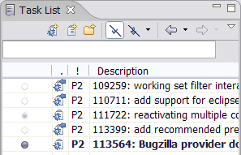
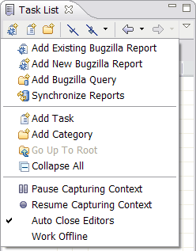
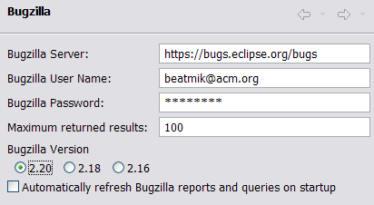
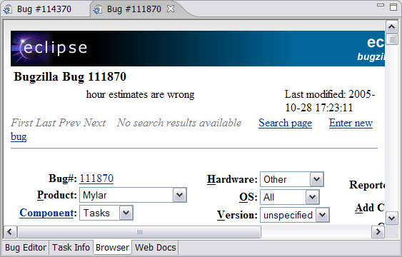

Persistent Context Change Sets

Released December 2nd, 2005. Send questions to mylar-users@eclipse.org.
Submit feature requests to
Bugzilla.
Items added since Mylar 0.4.3 are
highlighted
|
Task Planner |
Still experimental, but getting used internally for planning so feel
free to comment.
|
|
|
|
|
Active Change Sets |
Can be disabled...
|
|
|
|
|
Direct Manipulation of Task List |
better drag-and-drop in Task view...
|
|
|
|
|
Active task indicated on list |
Visible both in the view and as the tooltip... if the view is in
fast mode the tooltip and contents description will be updated
accordingly. If it is not in fast mode only the view tooltip will be
updated so that the additional content description line (see search
results view) does not appear on the task list...
|
|
|
|
|
Persistent Context Change Sets |
The automatic task context change sets now persist, so that if there
are any uncommitted resources in the change set it will not
disappear when the task is deactivated, and multiple change sets can
be present. While the context change sets are affected by
interest manipulations (i.e. marking a file uninteresting will
remove it from the change set), they do not 'see' the interest decay
in order to indefinitely retain any resources modified as part of
that task. If resources are changed outside of the context
(e.g. by applying a patch) they can be added to the task via the Add
To menu (visible below). If the task context they are added to
is active those resources will be also come interesting.
|
|
|
|
|
Resource Creation |
Newly created resources (e.g. packages, classes, files) now get added automatically to the active task context. |
|
|
|
|
Editor Management |
If the Manage Editors with Context option is selected open editors
will correspond to the active task context: - On task activation the editors of the most interesting elements will be automatically opened, and populate the Ctrl+E list. Set the number of editors to open on the Mylar preference page. - Closing an editor will mark the corresponding file and all children uninteresting (Note that "Mark Less Interesting" now recurses to children). So if you navigate to something uninteresting simply hit Ctrl+F4. - Note that this option will turn off the Eclipse "Close editors automatically" option, but will set it back to it's original state if toggled off.
|
|
|
|
|
Mapping of Incoming Changes to Reports |
When the Synchronize view is in Incoming and Change Sets mode
(visible below), and Mylar Change Set support was used to commit,
incoming changes will be grouped by task description. Right
clicking a Change Set will bring up an "Open Corresponding Report"
action to navigate to the corresponding issue (either Bugzilla
report or Web Link). The same action is available for
navigating from commit messages to reports in the CVS Resource
History view.
|
|
|
|
|
Context Capture Pause Indication |
Pausing context capture is now indicated on the status bar.
Note that other notifications can occlude this one, so if you notice
newly selected elements not populating the context check the state
of the toggle button on the Task List.
|
|
|
|
|
Change Set Integration |
The active task now corresponds to a Change Set that's managed
by Mylar. All resources in the task's context automatically get included
in this change set, making it possible to synchronize and
commit only those resources. Resources modified that
are not part of the Task Context will appear outside of the Change
Set in the Synchronize view. Note that as with other Change
Sets you need to set the Synchronize view into either Incoming or
Outgoing mode and toggle the "Show Change Sets" button.
|
|
|
|
|
Commit Task Context |
Resources in the Task Context can be committed either by
right-clicking the active task and selecting the Commit Task Context action, or
by right-clicking the Change Set in the Synchronize view. In
both cases the commit message will be populated by the description
and URL of the task (if available). The comment prefix can be
changed in the Task List preferences page.
|
|
|
|
|
Support for Hierarchical Problems Layout |
The
Mylar interest filter can now be applied to the Eclipse 3.2 Hierarchical Layout of the
Problems view. The Flat Layout is recommended when Mylar is
applied, since it helps focus on the markers of interest.
|
|
|
|
|
Task context indication |
If a task is inactive, but
has a context associated with it, the Activate widget appears
lightly filled (i.e. as bug 111722 below).  |
|
|
|
|
Pause and resume context capture |
Pause and resume task context capture using the drop-down menu on
the Task List. This can be useful for quick diversions that
don't warrant a new task. As a reminder of context capture
being paused, the Title of the Mylar Tasks view will change.  |
|
|
|
Improved Outline |
The Bug Editor Outline can be used to navigate the report by
commenter and date.
|
|
|
|
|
Proxy settings |
To enable use with firewalls and proxy servers the Bugzilla Client follows proxy settings set in the Install/Update preference page. |
|
|
|
|
Bugzilla 2.20 support |
Bugzilla support has been updated for version 2.20. If you are
switching from Bugzilla 2.18 to 2.20 you will need to update the
existing Bugzilla Queries in your task list. Double click each
query category to edit it, press "Update Options", and then simply
click OK to save the query. Please note that the default
Bugzilla configuration is now 2.20.  |
|
|
|
|
Browser tab for Bugzilla reports |
A new editor tab makes it easy to switch from the Bug Editor to
Browser-based editing. Note that when using the Browser
queries will not automatically refresh after submitting changes on a
bug. You can set the Browser to be the default editor in the
Task List preference page.
 |
|
|
|
|
Improved Task List actions and shortcuts |
The Task List popup menu has been improved to be more context
sensitive and to always create items in the category that is
currently in focus. Tooltip behavior has been improved.
Common actions are now keyboard shortcuts: - New Task: ins - Delete: del - Rename: F2 - Copy Description: Ctrl+C
|
|
|
|
|
Links to web reports |
Tasks can be linked to web
pages. For example, if you want a task to correspond to a Wiki
page or to a bug report copy the URL of the report, click the New
Task button on the Task List, and the URL will automatically be
inserted in the Web Link field. If you click Get Description
the title of the page will be inserted into the Description field.
The task will appear with a Web icon decorator, and will
automatically bring up a Task Editor page that loads the web link
when opened.
|
|
|
|
Task context data export |
The Mylar Task List and
related data can be exported, e.g. for backup purposes.
You can now export to an
archive file.
|
|
|